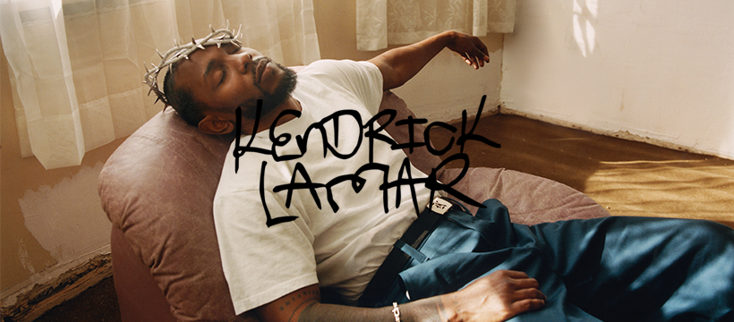

Descrição
Kendrick Lamar é um dos rappers mais influentes dessa geração, com uma identidade única que une crítica social, sentimentalismo e uma das letras mais aguçadas da história do hip-hop. O artista tem músicas consideradas marcos na história da indústria como: 'Humble', 'Not Like Us' e 'DNA'. Além disso, ele criou álbuns amplamente premiados, cujo os principais serão apresentados nesta discografia.